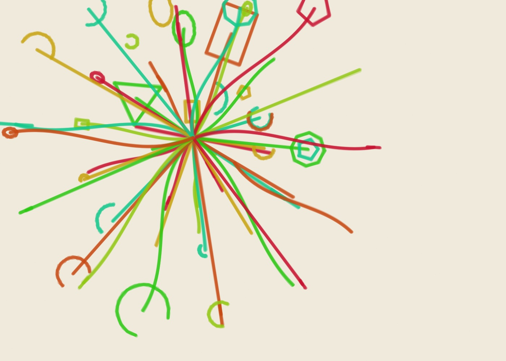
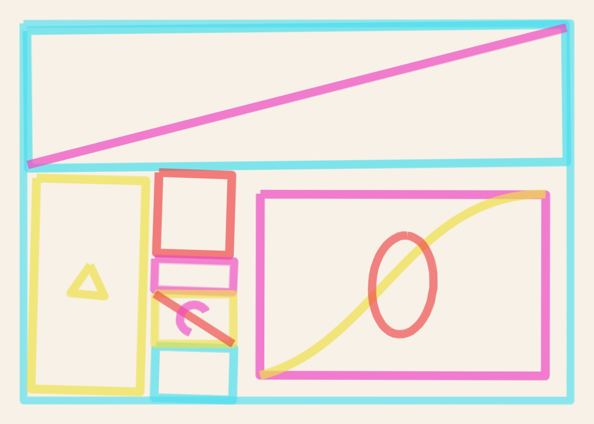
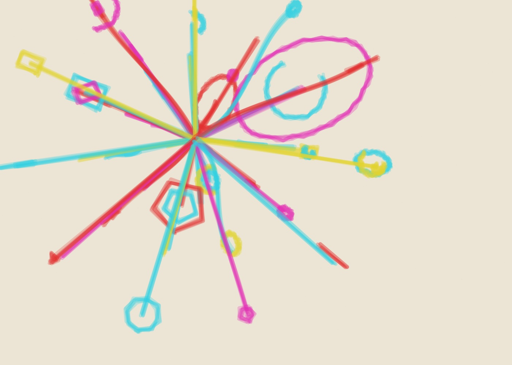
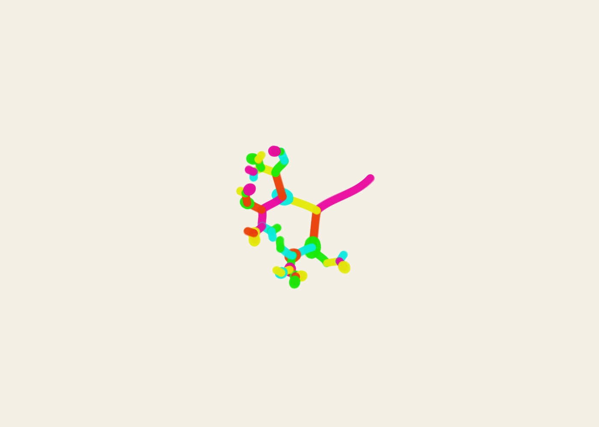

2026-10-10
10 October 2026
Radiant Systems · Connected Fields · Growth Systems · Constructed Forms · Automatic Marks · Recursive Divisions
A growing daily archive of deterministic golden-ratio generative artworks created by ALGO/ART and rendered with imperfect digital marker strokes.

Radiant Systems · Connected Fields · Growth Systems · Constructed Forms · Automatic Marks · Recursive Divisions

Growth Systems · Constructed Forms · Automatic Marks · Orbital Studies · Golden Trajectories · Connected Fields

Recursive Divisions · Radiant Systems · Connected Fields · Growth Systems · Constructed Forms

Radiant Systems · Connected Fields · Growth Systems · Constructed Forms · Automatic Marks

Orbital Studies · Golden Trajectories · Recursive Divisions · Radiant Systems · Connected Fields · Growth Systems

Growth Systems · Constructed Forms · Automatic Marks · Orbital Studies · Golden Trajectories · Recursive Divisions · Radiant Systems · Connected Fields